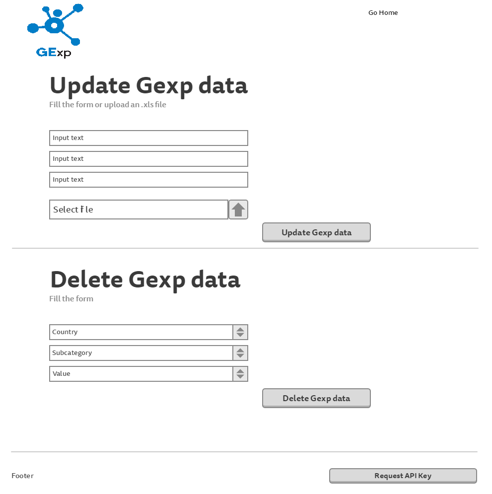

Abstract
In the years since its creation in 1995, much debate has arisen surrounding the reliability, and usefulness of the Gender Development Index (GDI) in making adequate comparisons between different countries and in promoting gender-sensitive development. The GDI is particularly criticized for being often mistakenly interpreted as an independent measure of gender-gaps when it is not, in fact, intended to be interpreted in that way, because it can only be used in combination with the scores from the Human Development Index, but not on its own. Additionally, the data that is needed in order to calculate the GDI is not always readily available in many countries, making the measure very hard to calculate uniformly and internationally.
Table of Contents
Introduction
GExp is an interactive Web tool to explore, filter, visualize and update the information concerning the disparities between women and men in three basic dimensions of human development: health, knowledge and living standards. This web-application offers various queries of interest. An example: the map of European states offering at least 13 years of schooling for females versus males, plus info about the most important universities in these areas.
Objectives
The main objective of the application is to transform one-star data (eg: xls, pdf, ...) into 5-star linked data(rdf, owl). The converted data would be provided to users in an interactive way allowing to filter and browse through different categories, gender, countries and years.

Architecture
Application architecture

Main workflow

Front-end
Update GExp data store
Used Techologies
Front-end
- AngularJS
- HTML5
- CSS3
- Ajax
- Javascript
- RDFa
Back-end
- .NET
- Pyton
- REST API
- SPARQL
Data store
- StarDog
- RDF files
- OWL files
Tools
- Open refine
- Any23
- Protege
Resources
We use resources from the following websites:
- Gapminder World for different statistical information regarding the world,
- Eurostat for the European countries,
- Awesome Women In The Open-Source Community for the Computer Science domain,
- European Social Survey for insights concerning the European citizens.
- DBpedia
- Wikidata
Authors
- Ciubotariu C. Calin Cristian - MLC
- Gliga N. Mihail - MLC
- Hrisca C. Marius Valentin - MLC
References and bibliography
- http://profs.info.uaic.ro/~busaco/teach/courses/wade/
- https://www.wikidata.org/wiki/Wikidata:Main_Page
- http://wiki.dbpedia.org/
- https://www.gapminder.org/data/
- https://schema.org/docs/schemas.html
- http://ec.europa.eu/eurostat/data/database
- http://www.europeansocialsurvey.org/data/
- http://blog.sourced.tech/post/100-awesome-women-in-the-open-source-community-you-should-know/